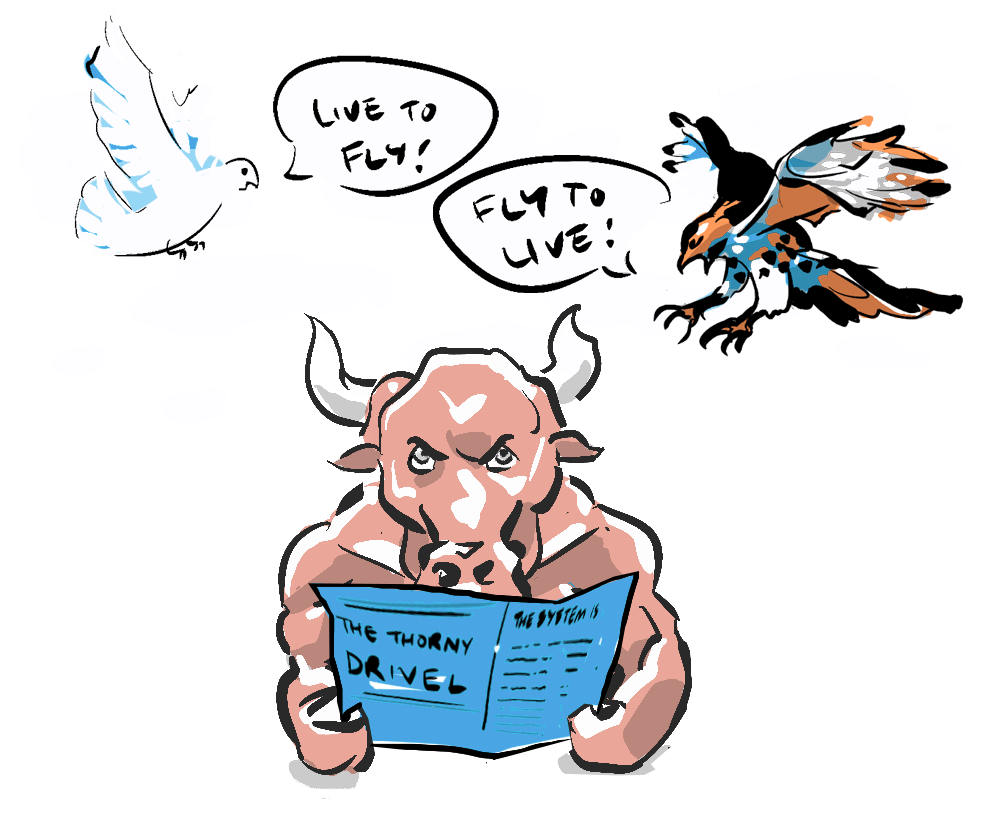

Game theorist Liv Boeree describes herself as pathologically competitive and indeed, her life has been about "winning" in many ways. Whether it was getting straight A's in class and graduating with a First Class Honours Degree in Physics (no less) with Astrophysics (no less) or winning The European Poker Tour (€1,250,000, no less) Liv has forged a sharp strategic mind that she now applies to encouraging "win-win" games (and saving the world, no less).
With an eye to paying off her student debt, soon after graduating, Liv took part in a poker game show and showed herself and the world that the same intellect that excelled in physics also proved advantageous when calculating probabilities and personalities in real time at the poker table. She honed her knowledge of game theory while competing in increasingly high-stakes games, earning herself the moniker of The Iron Maiden, owing to her ruthlessness at the table, and her love for heavy metal.

Her game-theoretical hawkishness in competition was demonstrated most acutely in her appearance on the game show Golden Balls in 2007. Here she takes part in a final round which is essentially a "Prisoner's Dilemma". Let's just say Liv makes the game-theory-optimal decision... savage.
Now, while the world of poker was teaching Liv how to fool opponents, game theory was enriching her understanding of the complex dynamics of cooperation and competition, balance and self-interest, and the possibility of a new game.

In the wake of her financial successes, Liv has redirected her focus towards effective altruism. Effective altruism seeks to quantify charitable outcomes so as to allocate giving optimally. Here Liv has combined her calculating mind with a desire to help humanity win through founding the charity Raising for Effective Giving, which has raised 11 million dollars, largely from the poker community. Liv explains the practice of effective altruism through the metaphor of a triage doctor in a busy waiting room, who's job it is to allocate resources in a way the saves the most lives.
"Today, I am focussed on what I believe is my best comparative advantage—inspiring others to learn about rationality, science and risk analysis, so that more people have the tools to think more clearly about difficult global issues."—Liv Boeree
Liv now works as a science communicator and public intellectual advocating for non-zero-sum games on her Win-Win podcast. Win-Win has become a platform for deep-diving into a wide array of societal topics, from the intricacies of economics to the challenges and opportunities of artificial intelligence. And I owe a special debt of gratitude to Liv for acquainting me with the concept of Moloch, who she describes as "the god of negative sum games".

Liv continues to raise the stakes through her work in philanthropy, education, and advocacy, actively utilising the principles of non-zero-sum games to drive positive change and challenge the pervasive influence of destructive forces like Moloch. She reminds us that together, we carry the potential to architect a more cooperative, compassionate world, and in this shared endeavour, we all stand to win.